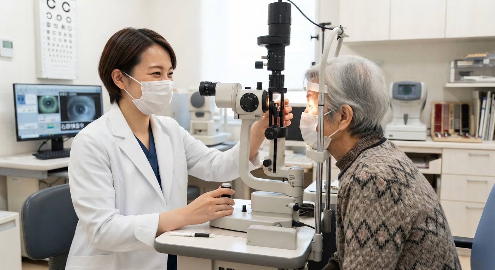
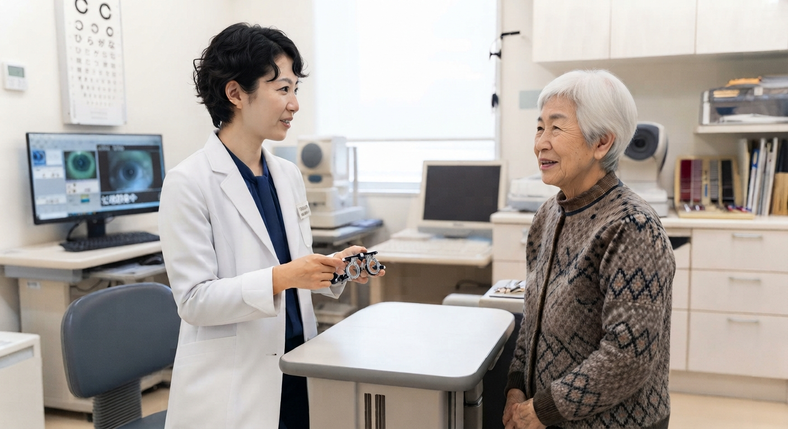
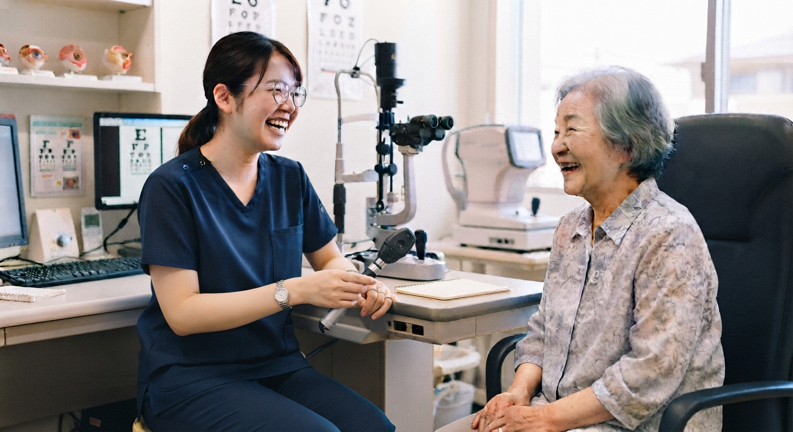
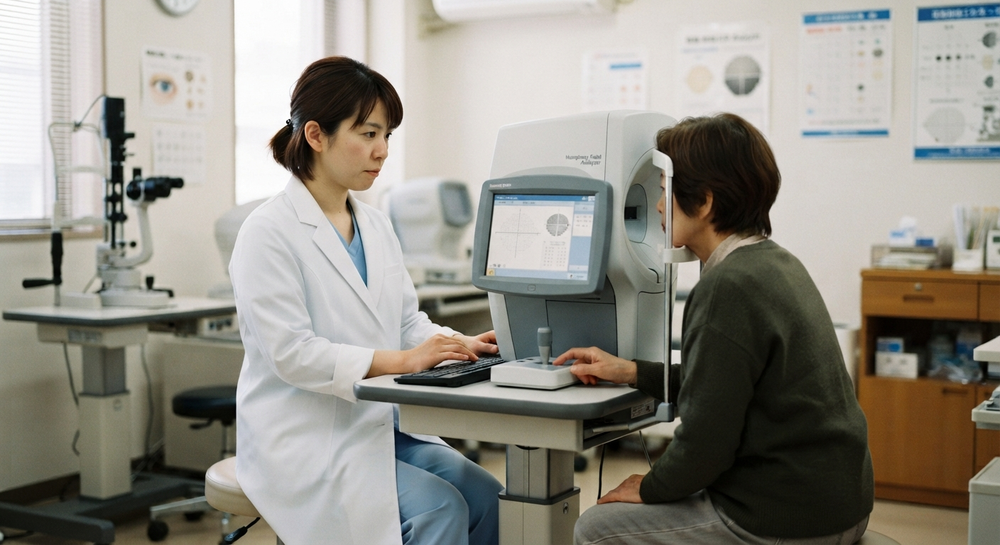
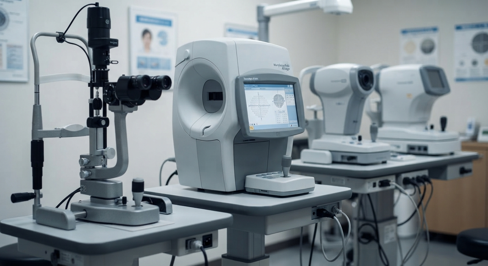

ー専門性を高める。人の温かさを、もっと大切にー
視能訓練士募集中
新井眼科クリニック（札幌市東区）
高度な眼科医療を支える専門性と、患者さん一人ひとりに寄り添う温かさ。
その両方を大切にするクリニックで、視能訓練士としての経験を活かしませんか。
正職員・パート 同時募集
求人について問い合わせる新井眼科クリニックで働く3つの魅力
札幌市東区の眼科クリニックで、視能訓練士として働く魅力を3つにまとめました。
設備
充実した設備・医療環境
最新の設備を備えた眼科クリニックです。設備に触れながら仕事ができます。
6名
6名の視能訓練士が在籍
現在、6名の視能訓練士が在籍しています。
幅広い
幅広い眼科領域を経験
一般眼科から近視治療まで幅広く対応しています。
視能訓練士の仕事内容
外来での検査や処方など、視能訓練士として幅広く経験できます。
外来の仕事

外来で幅広い検査・処方に対応
- 眼科検査一般
- 視野検査1日4～5例程度が目安です。
- 眼鏡・コンタクト処方
- 外来業務
- 眼科ドック対応
- 最新設備の操作
幅広い眼科医療に携われる環境
一般的な眼科診療から近視治療まで、幅広く対応するクリニックです。

- 一般眼科診療
- 近視・老眼対策
- 眼科ドック
診療内容の詳細は公式情報をご確認ください。
充実した設備・医療環境

最新の設備を備えた眼科クリニックです。日々の検査業務の中で、最新設備の操作にも携われます。患者さんの利便性にも配慮した環境で、専門性を磨きながら働けます。
6名の視能訓練士が在籍
現在、視能訓練士は6名。看護師・事務・医師とともに、クリニックの診療を支えています。
6名視能訓練士
7名看護師
6名事務
3名常勤医師
1名非常勤医師
働く環境・勤務条件
残業ほとんどなし
休日週休2日
育児支援あり
休暇有給休暇あり
賞与・昇給賞与あり（実績年2回）／昇給あり
社会保険完備
退職金制度あり
通勤マイカー通勤可（当法人規定あり）
所在地・アクセス北海道中央バス「東苗穂6条3丁目」停留所下車、目の前
こんな方を歓迎します
年齢不問・視能訓練士資格をお持ちの方。経験者優遇、ブランクがある方もご応募いただけます。
- これまでの眼科勤務経験を活かしたい方
- 視能訓練士として経験の幅を広げたい方
- 幅広い眼科検査や業務に携わりたい方
- 最新の設備に触れながら仕事をしたい方
- 患者さんに丁寧に接することを大切にできる方
- チームの一員として協力して働ける方
募集要項（正職員）
| 職種 | 視能訓練士（ORT） |
|---|---|
| 雇用形態 | 正職員 |
| 応募資格 | 視能訓練士資格保持者／年齢不問／経験者優遇／ブランクがある方も応募可 |
| 勤務地 | 新井眼科クリニック 札幌市東区東苗穂６条２丁目９−１８ |
| 給与 | 月給205,000円～ 基本給：195,000円～ 住宅手当：10,000～20,000円（規定あり） 資格手当：10,000円 固定残業代：なし |
| 昇給 | あり |
| 賞与 | あり（実績年2回） |
| 勤務時間 | 変形労働時間制（1か月単位） 月～金：8:30～18:15（休憩115分） 土：8:30～12:30 第2・4木曜日：8:30～20:15 昼休憩115分／17:00～18:00は休診／夕休憩30分 |
| 残業 | ほとんどなし |
| 休日 | 週休2日／日曜休み／平日または土曜日祝日週1回 |
| 休暇 | 有給休暇／慶弔休暇／年末年始休暇／夏季休暇 |
| 育児支援 | あり |
| 社会保険 | 雇用保険／労災保険／健康保険／厚生年金 |
| 交通費 | 実費支給（上限12,000円/月） |
| 通勤 | マイカー通勤可 ※当法人規定あり |
| 退職金 | 退職金制度あり（勤続5年以上） |
| 定年・再雇用 | 定年：一律60歳／再雇用：65歳まで |
パートも同時募集しています。
パートの条件については、お問い合わせの際におたずねください。
パートの条件については、お問い合わせの際におたずねください。
まずは話を聞いてみませんか？
仕事内容や勤務条件について、まずはお気軽にお問い合わせください。
まずはお電話でお問い合わせください
電話：011-785-7707
受付時間：午前 9:00～12:00 午後 14:30～18:00
（第2・第4木曜日は20:00まで。休憩時間は17:00～18:00）